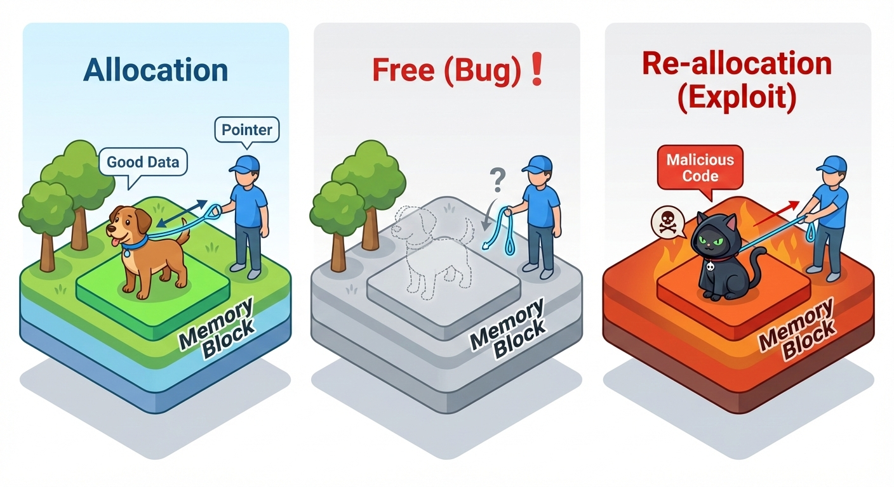
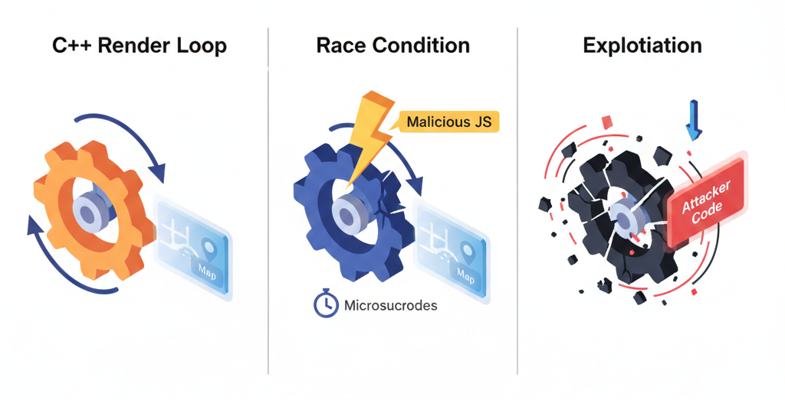
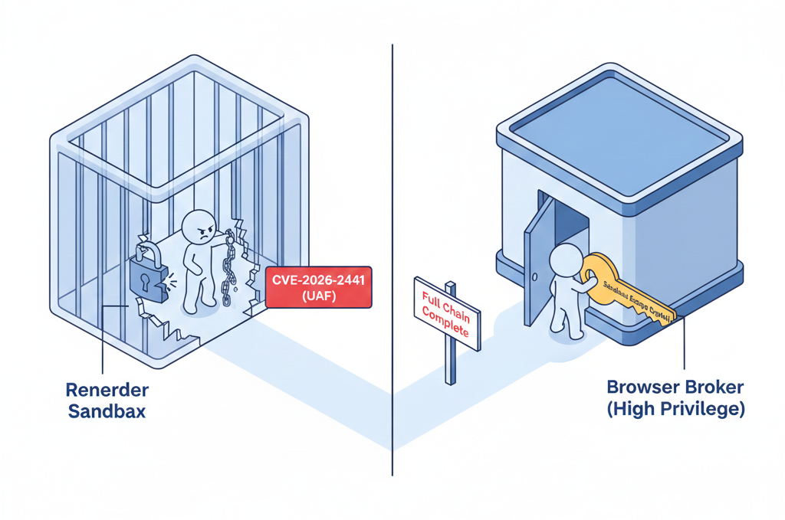

For years, the idea of a "deadly" stylesheet was a punchline among web developers. However, that hyperbolic nightmare has officially become a reality with the arrival of CVE-2026-2441. This high-severity "Use-After-Free" (UAF) vulnerability marks Chrome's first major zero-day of 2026, proving that even a simple CSS font feature can be weaponized to execute arbitrary code on your computer—all from a single visit to a malicious webpage.
Because this exploit is already being used "in the wild" to target millions of users across the Chromium ecosystem, the threat extends far beyond just browsers like Chrome, Edge, and Opera. It now jeopardizes essential desktop applications built on Electron, such as Slack, Discord, and VS Code. The web has entered a new era where the very act of rendering a page can compromise an entire system.
The Mechanism: What is "Use-After-Free"?
To understand how this hack works, we must examine how Chrome’s Blink engine, written in C++, manages memory. In C++, programmers manually allocate and delete memory using pointers—references that tell the system where data is stored in the RAM.
The Cat and Dog Analogy
Cybersecurity experts often use this analogy to explain memory management failures:

- Allocation: A pet walker (the Browser) holds a leash (Pointer) attached to a Dog named "Frank" (the font data).
- The Bug (The Free): The programmer tells the walker, "We don't need Frank anymore." The Dog is removed from the spot, but the walker forgets to drop the leash. This is now a Dangling Pointer.
- Exploitation (Re-allocation): Because that spot in the park is now "empty," an attacker quickly places a Cat named "Randy" (malicious code) in that exact same spot.
- The Use: The browser attempts to use the data again. It pulls the leash and commands "Bark!" but because it's now pulling on a Cat, the system's logic breaks. In a computer, this "mismatch" allows the Cat (the attacker's code) to take control of the program's execution flow.
The Race Condition: JavaScript vs. The Rendering Engine
The exploit relies on a Race Condition—a scenario where two processes run concurrently, and the outcome depends on which one finishes first. In this case, the race is between the Blink C++ Renderer and the V8 JavaScript Engine.

- The Loop: The C++ engine starts a loop to iterate through the
@font-feature-valuesmap to apply styles. - The Intervention: While the C++ loop is mid-process, malicious JavaScript executes (perhaps via a
CSS.registerPropertycallback). - The Deletion: The JavaScript commands the browser to delete the stylesheet.
- The Result: The C++ loop, unaware the data is gone, follows a pointer to a memory address that has already been freed.
By precisely timing this deletion, the attacker wins the race in microseconds, gaining control of the thread.
/* Malicious CSS Fragment */
@font-feature-values "ExploitFont" {
@styleset {
nice-style: 12; /* Triggering the iteration loop */
}
}Comparative Architecture: The Rust vs. C++ Debate
This isn't just a coding mistake; it's a symptom of a deeper architectural struggle. While both Chrome and Firefox are modern browsers, their underlying "DNA"—the programming languages they are built with—creates vastly different security profiles.
| Feature | C++ (Chromium) | Rust (Firefox Stylo) |
|---|---|---|
| Memory Safety | Manual / Risky | Compile-time Guaranteed |
| Dangling Pointers | Possible | Mathematically Prevented |
| Concurrency | Security Nightmare | "Fearless Concurrency" |
Firefox's Stylo engine is written in Rust, a memory-safe language that uses a "Borrow Checker" to manage ownership. If a Rust developer tried to write a loop that modified a font-feature map while simultaneously iterating over it, the code would fail to compile. The language itself makes it mathematically impossible to have a dangling pointer in safe code.
The "Full Chain" Exploit: From Sandbox to System
Chrome is designed with a Privilege Separation model. A UAF in the CSS engine is just a "foothold" inside the heavily sandboxed Renderer Process. To turn a tab crash into a total system takeover, an attacker must execute a Full Chain Exploit.

- The Foothold (CVE-2026-2441): The attacker uses the
@font-feature-valuesUAF to run malicious code inside the Renderer process (the "prison cell"). - The Sandbox Escape: Once inside, the attacker launches a second, separate exploit against the interface between the Renderer and the high-privilege Browser Broker process.
By chaining these, the attacker moves from "I can control this tab" to "I can control the Broker." Once they control the Broker, they have the same permissions as the user: they can install a keylogger, encrypt files for ransom, or steal saved passwords.
Impact: The Electron "Hidden" Risk
The danger extends far beyond the browser. Because of the Electron framework, this vulnerability sends shockwaves through the entire desktop ecosystem. When a critical bug like this hits Chromium, it doesn't just affect browsers; it affects every app that bundles Chromium to render its UI.
Vulnerable Desktop Apps (The Chromium Hidden Within)
- Communication: Slack, Discord, WhatsApp Desktop, Microsoft Teams.
- Development: VS Code, Postman, Atom.
- Entertainment: Spotify, Twitch, Obsidian.
Attack Vectors: Zero-Click Exploits in Desktop Apps
What makes this CSS bug particularly deadly in a desktop app is that you don't even have to visit a website to be compromised.
- OpenGraph/Link Previews: In a Discord or Slack channel, an attacker posts a malicious link. Even if you don't click it, the app's "Link Preview" feature might fetch and render the CSS, triggering the UAF in the background.
- Malvertising: Apps like Spotify often serve ads. If an ad network is compromised, a malicious ad can deliver the "CSS Trap" directly into the app's memory space.
- In-App Webviews: If an attacker compromises a documentation server, they can inject malicious CSS into an app's internal browser window.
The Economics of Vulnerabilities
A vulnerability like CVE-2026-2441 is not just a bug—it is a high-value commodity in a multi-million dollar marketplace.
- The White Market (Bug Bounties): Reporting the bug to Google via the Chrome Vulnerability Reward Program (VRP) might earn a researcher between \$5,000 and \$30,000.
- The Gray Market (Exploit Brokers): Selling to brokers like Zerodium or Crowdfense. A "Full Chain" exploit for Chrome can command a valuation of \$500,000 to \$2,000,000.
Organizations like the NSA or intelligence agencies track these vulnerabilities for espionage. A CSS-based bug is particularly attractive for state actors because it is an "unlikely" vector that many corporate firewalls don't inspect as closely as JavaScript or executable files.
In mid-February 2026, CISA added this CSS bug to its Known Exploited Vulnerabilities (KEV) Catalog. This is a mandatory list for US Federal agencies, requiring them to patch within weeks—a clear testament to the severity of this threat.
"One simple font style can lead to a silent system takeover. This isn't a hypothetical nightmare; it's the reality of complex software. Keep your dependencies updated."
Conclusion
CVE-2026-2441 is a critical reminder that complexity is the enemy of security. From a race condition in a CSS loop to a multi-million dollar exploit chain, this vulnerability exposes the fragile memory safety of C++ and the cascading risks of the Electron ecosystem. As I continue my journey into cybersecurity, analyzing these "full chain" exploits reinforces that protection must exist at every layer—from the language the code is written in to the sandbox it runs in.
The web is no longer just a place of information; it is a landscape of attack surfaces. Stay vigilant, stay updated.